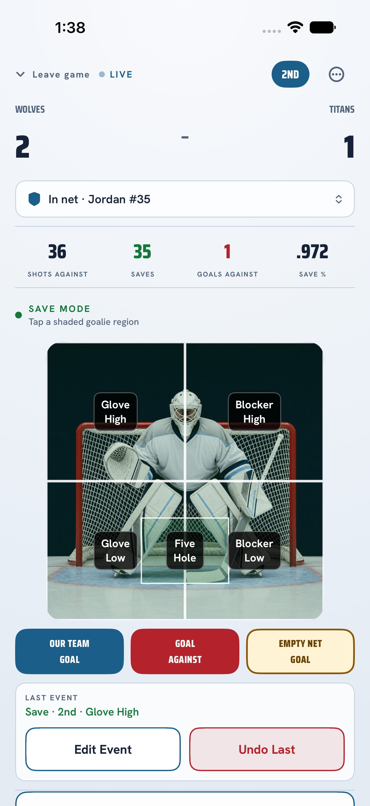
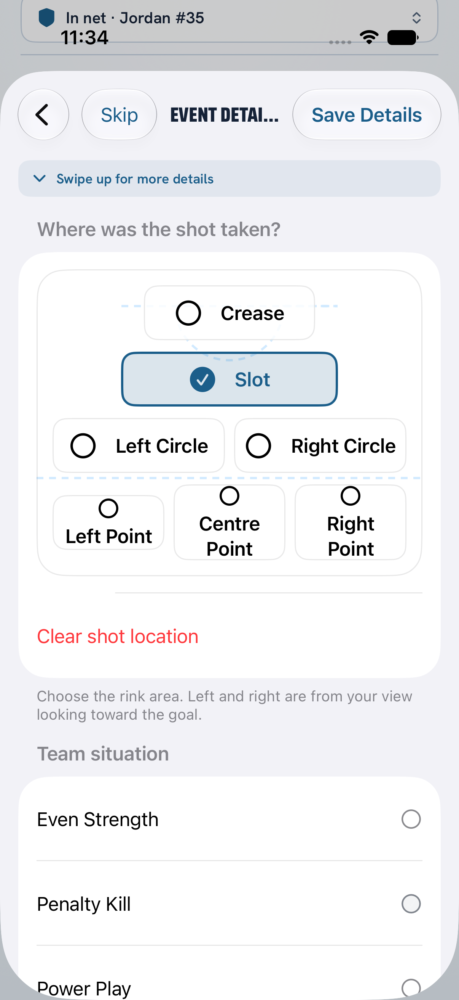
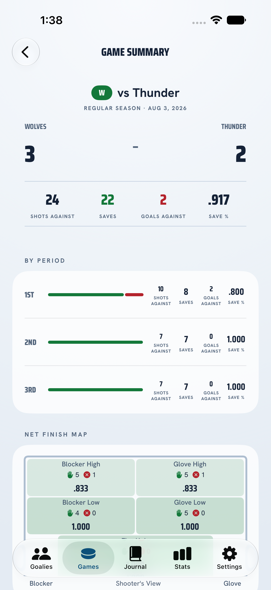
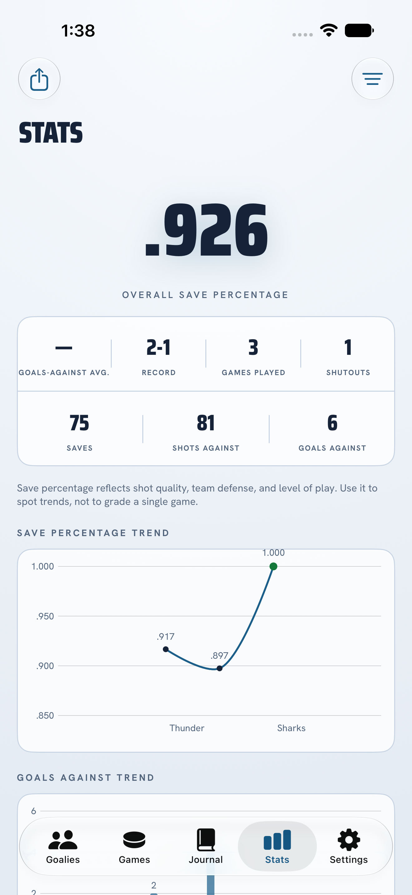
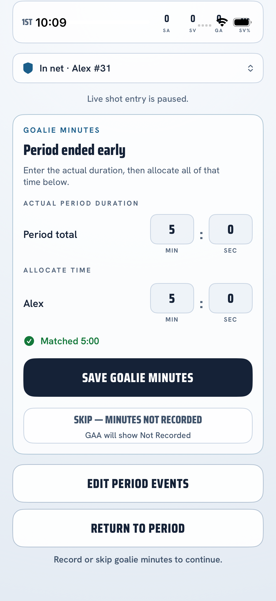

Live controls you can find
Save, Goal, and Empty Net are separate actions. The next shot is more important than a perfect form.
Fast, clear goalie stats for parents and coaches. Capture the play while it happens, then turn a season of games into useful evidence.

PuckStop keeps the live job small: record the save or goal first. Location, period, and context stay available for the moments when you have a second.
These are real PuckStop screens. The interface uses plain labels and separates normal saves from empty-net and shootout events.




Track the details that make a goalie conversation useful, without turning a youth game into a nightly grade.
Save, Goal, and Empty Net are separate actions. The next shot is more important than a perfect form.
See where located shots came from, then compare the map with the game situation and period.
Review a game report, export a PDF or CSV package, and keep a JSON backup under your control.
Compare games over time instead of overreacting to one noisy night in a cold rink.
Use the same record for a parent’s development journal or a coach’s post-game review. The data stays readable in both places.
Track the game without needing a spreadsheet in the stands. Bring back the good moments, spot patterns, and keep the conversation about growth.
Read the parent’s guide →Use shot volume, locations, periods, and context together. Export a clean record when a player or team review needs more than memory.
Browse the stats guides →No account, ads, behavioural tracking, or developer-operated cloud service. PuckStop stores the stats you enter on your device and lets you choose when to export them.
Read the plain-English privacy policy →Start with the essentials. Add detail as the workflow becomes familiar.
No. The core tracking and review workflow is designed to work offline. A calendar link is an optional direct download you choose to start.
Record the next play and keep going. You can correct an event later, and trends become more useful across several games.
It is kept separate from normal goalie shots and goals because the goalie was not in the net. Read the empty-net and shootout guide for the detail.
Yes. PuckStop can create a PDF/CSV Stats Package and a JSON backup that you send through Apple’s share sheet.
PuckStop 1.0.1 is available on the App Store in Canada, the United States, the United Kingdom, Australia, and other regional storefronts. One purchase: CA$9.99 or US$7.99; other markets show local pricing.